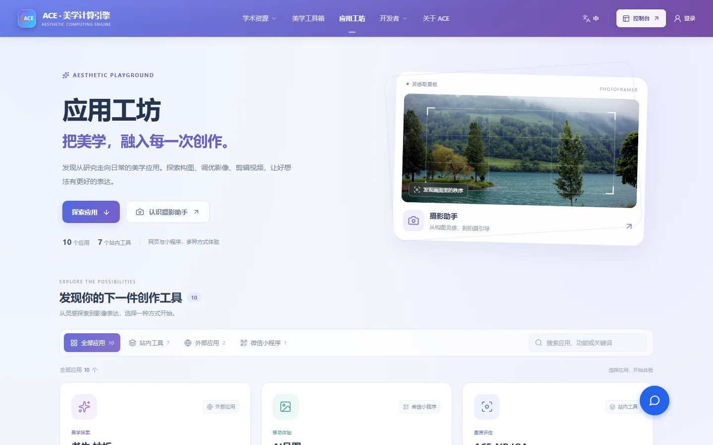
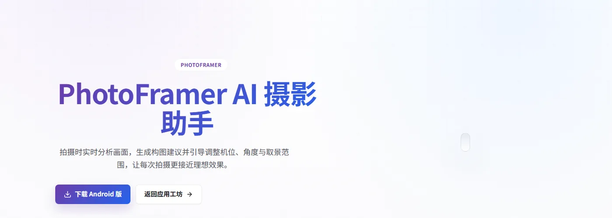
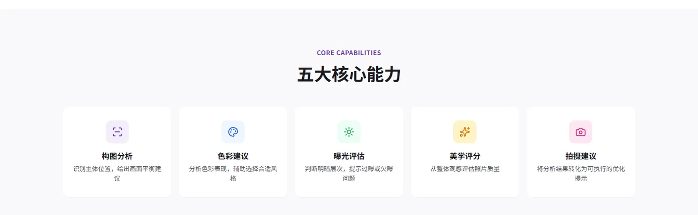
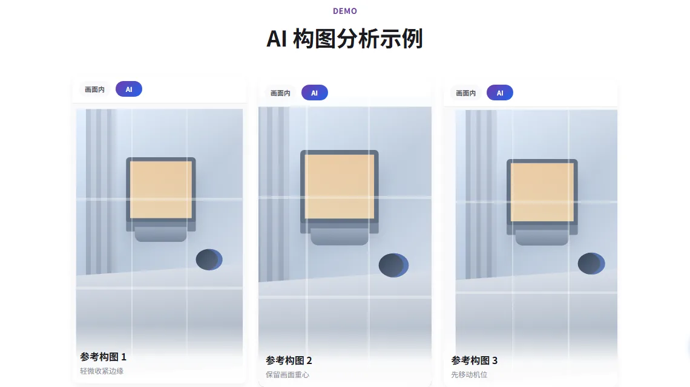
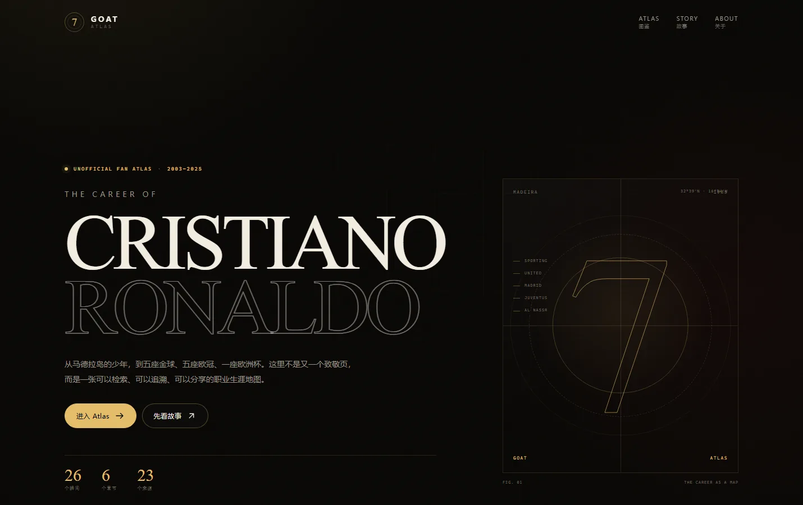
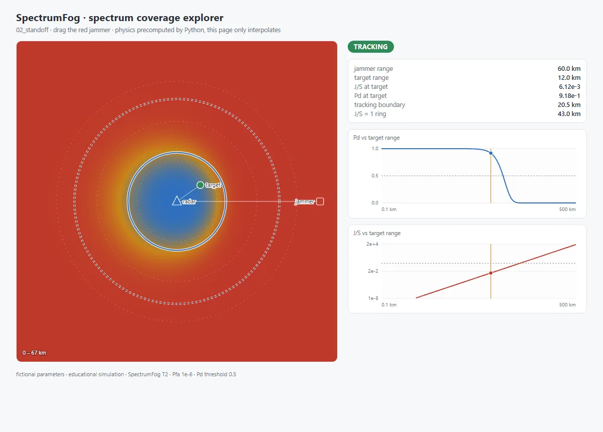
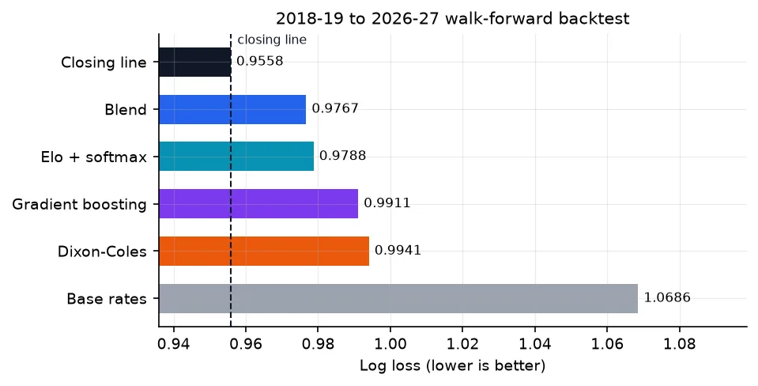
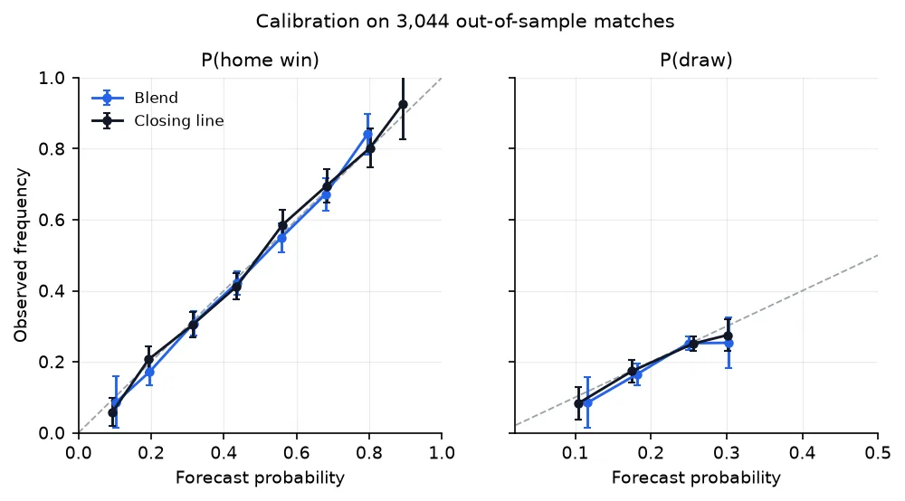

五个能打开的界面
从平台工坊到拍摄助手，从暗色图鉴到交互式仿真 —— 每页都写了我实际实现的那部分。
01 — ACE · 应用工坊
把「美学能力」包装成 10 个可用工具
2025.11 – 2026.08
难点不在好看，在于让用户知道从哪开始。

ace-aesthetics.cn/application · 品牌区、主视觉卡、筛选区与应用卡片墙
信息分层一屏三层：工坊是什么（标题 + 定位 + 两个入口）→ 有什么（应用墙）→ 怎么找（分类 Tab + 搜索 + 结果计数）。
卡片组件缩略图 + 类型徽标 + 标题 + 一行说明 + 跳转箭头，10 个应用共用同一套间距与圆角。
主视觉卡右侧带透视的取景框，先把「摄影助手」演示一遍，比文字更快说明工具在做什么。
筛选与搜索分类 Tab 带计数，切换时列表与计数同步；搜索框占位给出示例，空结果有独立状态。
实现Vue3 组合式 API + Element Plus，桌面 / 平板 / 移动三档断点，卡片栅格 4 列降到 1 列。
界面的每一层，都应该回答一个问题：我现在在哪、下一步能做什么。
02 — ACE · 摄影助手
讲清「AI 怎么帮你构图」的产品页
2025.11 – 2026.08
首屏讲价值，下面讲流程、能力和证据。



首屏 → 五大能力卡 → 构图示例：价值主张、能力拆解、效果证据各占一段
三步流程序号 + 连接线把「拍照 → 分析 → 建议」串起来，比三列文字更快被理解。
能力卡图标按语义配色（构图紫、色彩蓝、曝光绿、评分黄、建议粉），底色取同色 8% 透明。
示例区三张对比图带构图辅助线和「AI」标签，把抽象建议变成看得见的画面。
实现拆成 Hero / Steps / CapabilityCard / DemoCard，文案与图标走配置，改一处不影响布局。
把 AI 的判断，翻译成用户能执行的下一步 —— 这是这个页面唯一的目标。
03 — GOAT Atlas
视觉即结构：用字号和留白做层级
2026.10
一个暗色编辑风的职业生涯图鉴：86 个名场面、78 个来源，放在同一张地图上。

haohaohao-cell.github.io/goat-atlas · 超大衬线标题 + 细线网格 + 单一金色重点色
字号即层级标题 72 / 副标题 14 / 正文 15 / 元信息 11，四级足够；不靠加粗，靠字号和字距拉开主次。
颜色克制全站只有黑、米白、金三色；金色只出现在按钮和强调标签上，视线永远先落在动作上。
细节可交付分享卡按 4:5 单独排版，OG 图 1200×630 分章节生成，PWA 图标、RSS、JSON-LD 一起配齐。
多语言中英葡三个入口共用一套版式，英文标题的字距单独收过，避免长单词撑破栏宽。
风格不是装饰，是信息结构的可视化：暗色是为了让照片和数字跳出来。
04 — SpectrumFog
拖动一个干扰机，雷达覆盖就跟着塌
2026.10 – 至今
让用户通过「拖一下」理解一个公式。

左：可拖拽的覆盖热力图 · 右上：实时数值面板 · 右下：Pd / J-S 曲线随拖动更新
交互模型拖拽干扰机 → 热力图重绘 → 跟踪边界收缩 → 两条曲线上的标记点同步移动，一屏之内因果可见。
性能取舍物理只在 Python 侧算一次，导成查表，前端只做插值 —— 所以拖动是顺的，不需要后端。
状态可读Tracking / Lost 用一枚徽标表达，不让用户从曲线里推；数值统一三位有效数字。
空间利用左图右数的不对称布局，把 2/3 宽度留给可视化。
好的交互不是加动效，是让因果在一屏之内闭合。
05 — PYTHIA · 数据看板
一组要被人「对账」的图表
2026.10 – 至今
每张图都要能回答：差多少、差在哪、可不可信。


左：排行榜（虚线 = 收盘价基准） · 右：校准曲线（带误差棒）
基准先行所有条形图都有一条参考线，差值一眼可见；没有基准的图，读者只能看出「谁长谁短」。
直接标注数值写在条尾，不用去 y 轴对格子；同一模型跨图同色，换图不用重新找。
误差可见校准图带误差棒，结论里给 bootstrap 区间 —— 图负责让人判断这个差距是不是噪声。
可复现图表由脚本生成，每周 CI 自动重跑并回填 README。
图表的任务不是好看，是让人一眼看出「差多少」，并且相信这个差。
另外三个项目
偏工程的三个：智能体安全、agent 可观测性、移动端全栈。
06
鉴行 · AgentJudge
智能体工具调用的实时审计与拦截。17 类红队场景，ASR 0%，良性任务完成率 94.1%。
Python · Docker · HMAC 审计链
07
agent-silent-failure
agent 做错了，它自己知道吗？8 类故障注入 + 2×2 判定，补一个查询工具后人工介入率 9–10/10 → 0/10。
Python · smolagents · LangGraph
08
PhotoFramer
Android + Spring Boot 的摄影构图 App：Canvas 网格、比例裁剪、相框叠加与实时预览。
Android · Spring Boot · Redis
关于
做法和联系方式。
- 层级：一屏之内先看什么、后看什么 —— 用字号、留白和位置，而不是靠加粗解决。
- 状态：空、加载、出错、超长文本 —— 这四种最容易被漏掉，也最容易被用户撞上。
- 一致：同一类信息用同一套间距、圆角、图标语义；不一致的地方，用户会以为是 bug。
- 还原：设计稿的间距和颜色落到代码里要能被复查 —— 所以我把尺寸写成变量，而不是散落在各处。
- 2024213444@bupt.cn
- Phone
- 18603285851
- Gitee
- gitee.com/hao-renyu